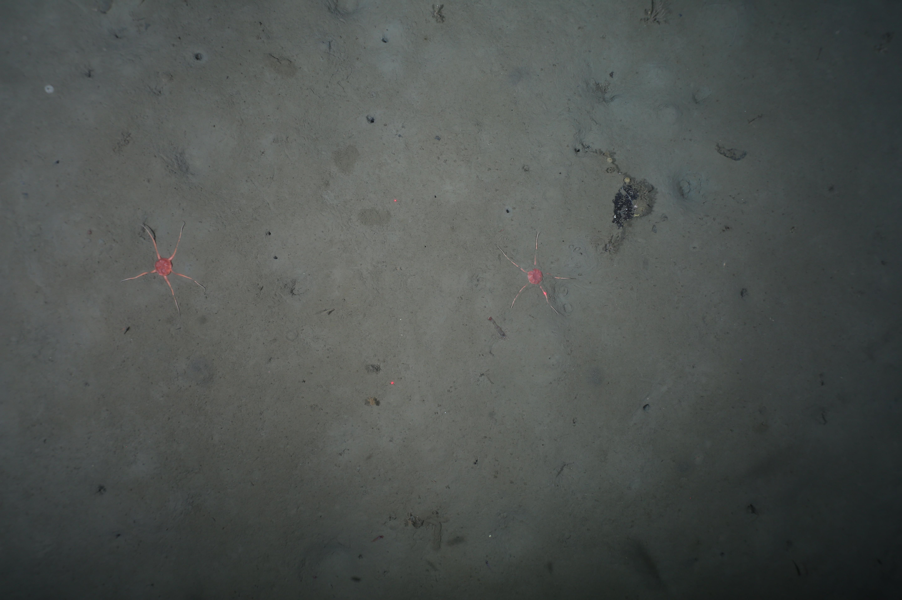

Modern marine ecology, particularly the study of benthic ecosystems, is increasingly driven by the acquisition of large volumes of imagery. From towed camera systems, remotely operated vehicles and autonomous underwater vehicles, underwater imaging systems now capture vast quantities of visual data. However, the interpretation of this imagery is slow, costly, and often inconsistent, creating a fundamental bottleneck that restricts the scale and speed of ecological insight.
Recent advances in computer vision methods can help to clear this bottleneck, assisting with tasks like taxonomic identification, abundance estimate, and habitat mapping. These methods have the potential to transform how benthic ecosystems are studied, enabling ecologists to work faster, more consistently, and at far greater scales. But despite this promise, these tools remain underutilised in benthic ecology. Without a formal education in computer science, many benthic ecologists do not understand the methods underpinning these computer vision approaches, leading to a lack of confidence in how to apply them to their own workflows. Additionally, marine imagery presents distinct complexities for computer vision systems, namely the presence of turbidity, variable lighting, and cluttered scenes which cause “off-the-shelf" models to perform poorly. This skills gap has slowed the community’s ability to harness emerging computational approaches and adapt them to their own workflows. This workshop has been designed to address these challenges directly. It will equip benthic ecologists—primarily early-career researchers with little programming experience and no prior machine learning background—with the foundational knowledge, skills, and confidence required to integrate computer vision into their research.
 All attendees will leave with reusable code, annotated Python notebooks, and complete workflows that can be easily adapted to their own datasets. The programme will be delivered by an interdisciplinary team from the University of Cambridge, the British Antarctic Survey, and the Scottish Association for Marine Sciences.
The workshop will run over two days, hosted in-person at the British Antarctic Survey in Cambridge, 10–11 March 2026. Teaching will be delivered through two complementary elements: accessible lectures introducing key concepts, and guided hands-on practicals using a real benthic dataset.
Day 1 – Foundations
- Morning lectures: Introduction to computer vision; challenges in marine imagery; effective data labelling.
- Afternoon practical: Building a benthic image dataset.
- Evening: Reception dinner.
Day 2 – Applications
- Morning lectures: Model training, evaluation, and best practice for ecological workflows.
- Afternoon practical: Training and evaluating models using the dataset from Day 1.
By the end of the workshop, participants will understand a full workflow—from building high-quality datasets to training and evaluating models for benthic ecological research.
By the end of this workshop participants will be able to:
- Describe the core concepts underlying modern computer vision (e.g. classification, object detection, segmentation) and how they apply to benthic imagery.
- Identify when and how computer vision is an appropriate tool for a specific research question.
- Recognise the distinct challenges of working with marine data (e.g. turbidity, colour distortion) and how they affect computer vision systems.
- Annotate benthic imagery effectively and understand how labelling types impact model performance.
- Outline best-practice workflows for computer vision, from dataset preparation and annotation to training and evaluation.
- Train and assess a computer vision model using open-source, reproducible code.
- Have the knowledge and resource to apply computer vision to their own marine image analysis problem.
The workshop is free to attend, with limited funding available to support accommodation and travel costs for those most in need. Priority will be given to PhD students and Early Career Researchers working in benthic ecology, with some experience in programming. Next, PhD and ECRs with a more general interest will be offered places, followed by other UKRO funding-eligible marine ecologists. Remaining places will be offered to UK-based people working in a sector aligned with UKRI science. Lunch will be provided on both days, along with a networking dinner on 10 March. Unfortunatley we are not able to support virtual attendance of the workshop.
To apply, please submit your details using this Google Form.
This workshop and research activities are generously funded by the Accelerate Programme for Scientific Discovery and the Cambridge Centre for Data-Driven Discovery (C2D3). Their support enables us to bridge the skills gap and provide hands-on training in computer vision for marine ecologists.
Details of all funded projects can be found in the official announcement.